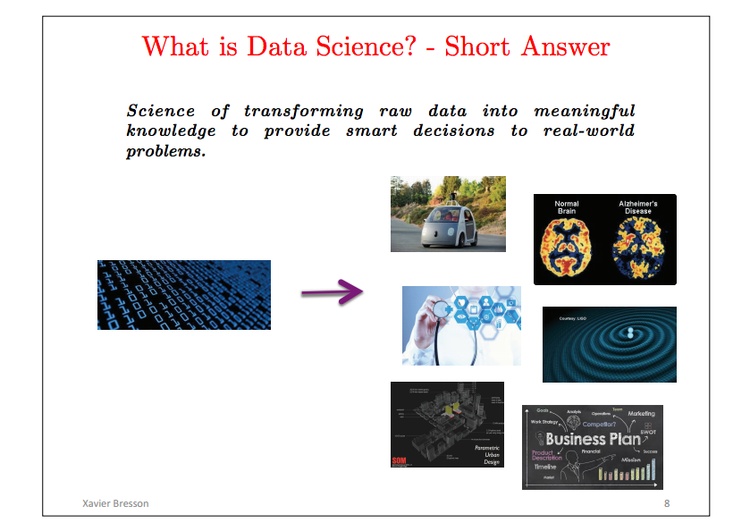
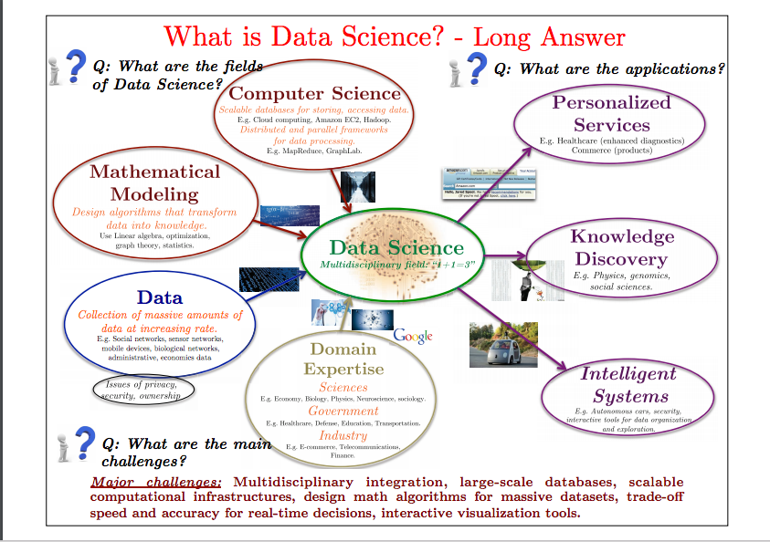

Chapter 2 What is R?
R is closely related to the language S which is a language developed by John Chambers, Rick Beckers (and, later, Alan Wilks) along with Doug Dunn, Jean McRae, and Judy Schilling at the Bell Labs. See the video of 40 years of S at the useR!2016 conference. S was initiated in 1976 as an internal interactive statistical analysis environment to quickly analyse, model and represent data.
It has the great advantage that it can be easily extended by users while developing more skills. The influential book “Statistical Models in S” by John Chambers and Trevor Hastie (1991) can still be used as a reference to perform statistical analysis in R.
Then, follows a series of acquisitions (Insightful, Lucent, Alcatel-Lucent…). Insightful developed a product S-PLUS which was a implementation of the S language with new features such as a GUI. In 2008, TIBCO (Business Analytics compagny) acquired the Insightful Corporation.
R as we use it, was created in 1991 by Ross Ihaka and Robert Gentleman (R & R) at the University of Auckland (New Zealand). In 1995, Martin Maechler convinced Ross and Robert to establish R as an open source project (under the GNU General Public License). Since 1997, the R project has been managed by the R Core Group (around 20 people) which controls the source code. In February 2000, R 1.0.0 was released. More details can be found in this paper by Ross Ihaka on R history.
R can be defined as a free software environment for statistical computing and graphics which runs on any operating system Mac, Windows, Linux. Its use is widespread in many different fields of application, in research, by academia, industries, institutes (Google, Facebook, British Museum, New York Times with amazing graphics!, fivethirstyeight, etc..). It is one of the favorite software of data scientists, widely used in Kaggle competions (see the interview by Anthony Goldbloom). Its success can be credited to the community which is very active and vibrant (many meetup, R groups, R conferences](https://www.r-project.org/conferences.html), mailing lists, stackoverflows, R bloggers, etc..).
One important feature is that users contribute, it is a collaborative project which constantly evolves. People can contribute by developing R packages (libraries of functions) that are not controlled but should meet a certain level of quality (documentation, tests). More than 11127 available packages have been developed by users and programmers all around the world (plus the bioconductor project which gathers many packages related to genomics, microarrays data analysis). It ensures that latest research results are implemented and made available for users (who can look at the code since it is open source). The R Task View clusters the packages by topics. Some packages have an associated publication often in Journal of Statistical Software where both the methods and code are reviewed.
R is an open-source software, used both by academia and business, how are its maintenance and development funded ? Many companies and organisations (technology companies, hedge funds, philanthropic organisations, etc.) have an interest in the development of new tools in R and in the growth of the community of users, because they are dependent on the R software. They founded the R consortium to promote the expansion of the R ecosystem. It is a group of business and philanthropic enterprises which provide money to fund R projects (R-ladies, API for Distributed Computing, etc.), as well as manpower and infrastructure to organise meetings between users and companies. This system benefits private users through fundings and the companies through the improvement of the R software. For more information about the R ecosystem you can check the presentation of David Smith (link between Microsoft and R) in this video.
Of course, R has drawbacks, it is not designed to be the unique tool fitted for any problems but it has the good feature of easily communicating with other languages, software, etc.
There are numerous ressources on R that can be found at the R home page. Many books are also available either on general or specialized topics (such as on the amazing graphics capabilities, on programming, on spatial statistics, bayesian statistics, etc); many of them are published under some special series such as SpringeR.
We should conclude this introduction on R by these two quotes from J. Chambers:
“The role of R is not just as a programming language or an interactive environment for data analysis. It provides both of these, but I believe its most transformative role has been when individuals and groups add their own contribution, extending R”. (Extending R, 2016).
“The best future for R is the one of variety not uniformity.” (useR!2014 conference, UCLA).
Another related question that you should think about is “what is data science?” My recommandation, is to have a look at David Donoho’s paper: 50 years of data science that he wrote for John Tukey centennial, one of the father of exploratory data analysis. I also came to these slides that I like:
